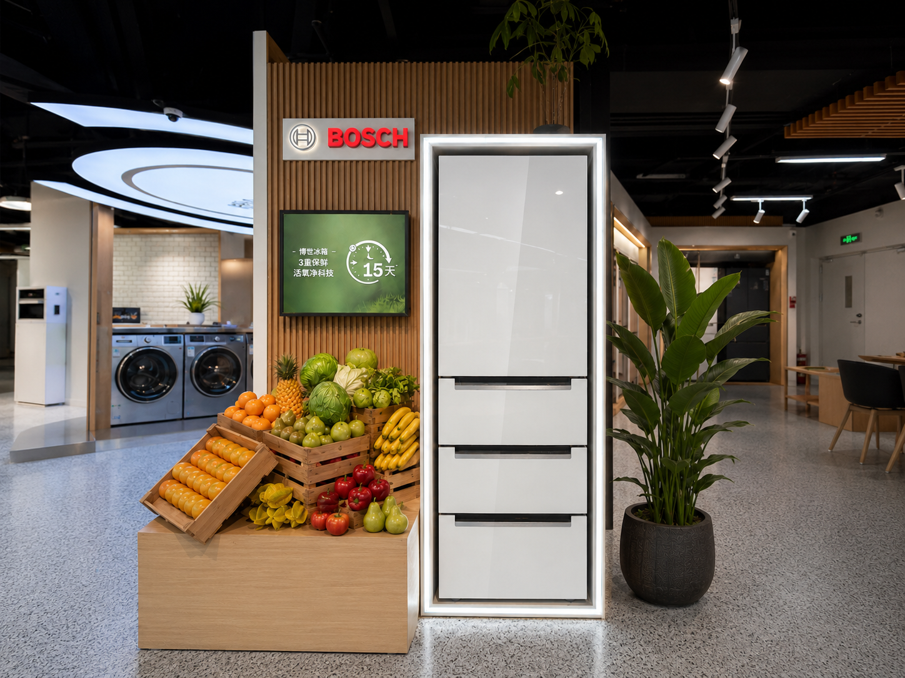
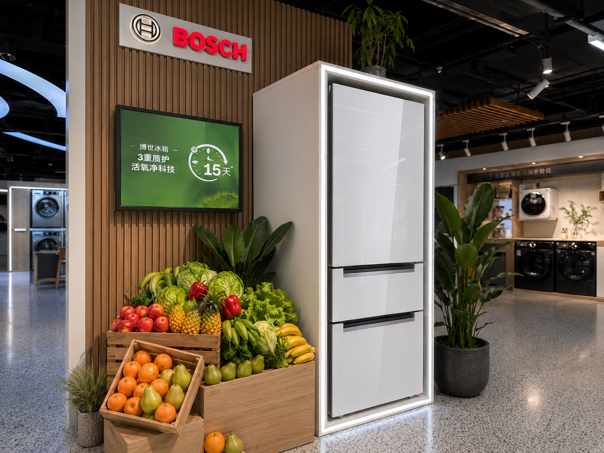
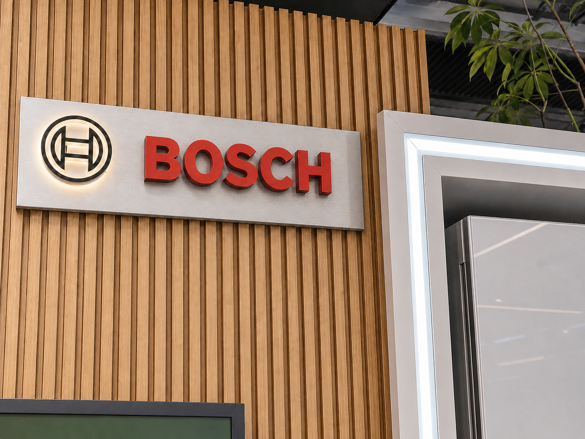
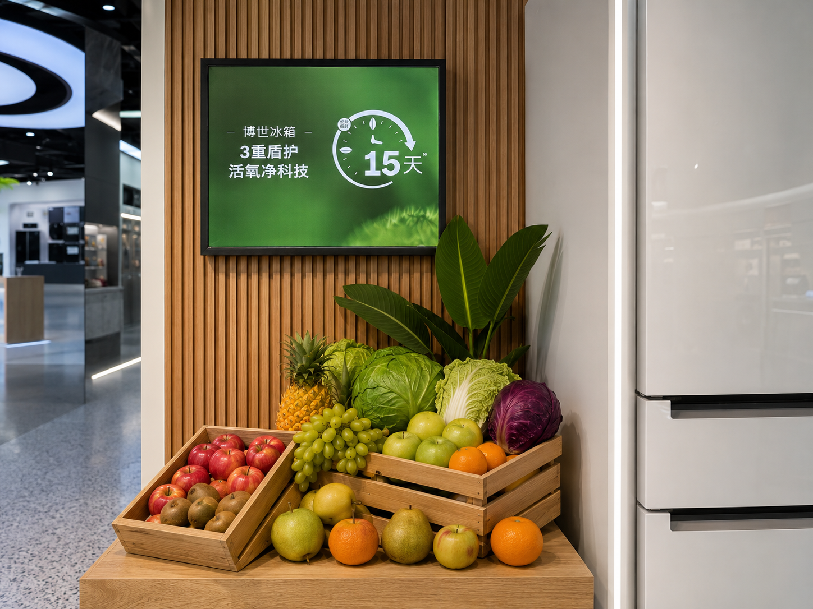

Bosch Refrigerator Demo Display
A freshness claim becomes credible when the appliance, demonstration content and physical display read as one precise retail experience.
The Bosch Refrigerator Demo Display is a complete product system designed and manufactured by REYI. A glossy glass-door refrigerator sits inside a luminous architectural frame, while an integrated 15-day freshness screen, illuminated Bosch mark, real-produce arrangement, oak slat wall and planted styling turn preservation technology into an immediate visual story.

One refrigerator framed as a complete freshness demonstration
The display treats the complete installation—not only the refrigerator—as the product. A controlled white light frame isolates the glossy glass-door appliance, the oak slat wall gives the system architectural depth, and the elevated green screen keeps the 15-day freshness message visible without competing with the refrigerator. Real fruit, vegetables and planting remain deliberately relaxed, connecting the technical claim to everyday food preservation while the surrounding showroom stays recognizably real.

Four decisions turn a technical claim into an intuitive demonstration
Appliance-first Light Frame
A continuous neutral-white frame traces the refrigerator silhouette, while controlled reflections make the closed glass door look premium and substantial.
Visible Feature Content
The elevated green screen presents the 15-day freshness message at eye level, with enough surrounding oak to keep the information deliberate and readable.
Real Freshness Cues
Real fruit and vegetables sit in clean light-wood crates with a few pieces placed outside, creating a natural demonstration rather than a grocery display.
Integrated Brand Architecture
The illuminated Bosch mark, oak slat wall, appliance frame, plinth and planting operate as one installed system instead of a collection of promotional props.
The product idea becomes clear through three controlled details

The 45-degree view reveals how the oak wall, media screen, fresh-produce plinth and illuminated appliance surround form one coherent retail structure.

The Bosch mark leads through precise scale, muted red, brushed metal and controlled halo light—not excessive brightness—while the frame remains secondary.

The raised 15-day screen and naturally arranged real produce translate preservation technology into a clear, credible and human freshness story.
Planning a refrigerator function demo display?
Share the store plan, refrigerator model and communication brief with us. REYI can coordinate the product footprint, luminous appliance frame, brand signage, digital-screen content, material samples, produce and planting presentation, power routing and installation-ready construction. Programs can be ordered through a brand headquarters and delivered for use in markets worldwide.
- Store plan
- Refrigerator model
- Feature brief
- Display dimensions
- Power & media needs
- Delivery timeline